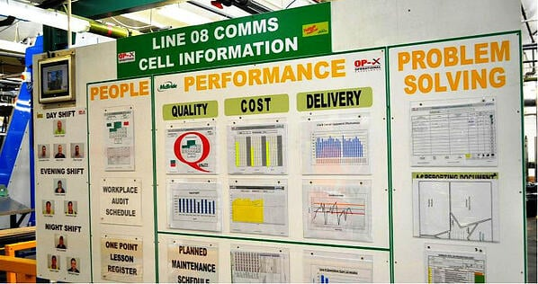

1 Introducción

La estadística es la ciencia de aprender a partir de los datos. Implica la recolección, análisis y presentación de los datos, y su utilización para tomar decisiones y resolver problemas.
Hay muchos aspectos del trabajo industrial que implican recoger datos, trabajar con ellos y utilizarlos para resolver un problema; el uso de la estadística es sólo una herramienta más, tan importante como cualquier otra disciplina en el bagaje de conocimientos de un científico, ingeniero o técnico industrial.
Los métodos estadísticos nos ayudan a describir y comprender la variabilidad. Cuando hablamos de variabilidad queremos decir que sucesivas observaciones de un mismo proceso o sistema no dan exactamente los mismos resultados. Por ejemplo, el consumo de gasolina de un coche no es siempre igual, sino que varía de manera considerable. Esta variación depende de muchos factores, como la forma de conducir, el tipo de carretera, la situación del propio vehículo (presión de neumáticos, compresión del motor, …), la marca de la gasolina, el octanaje, o incluso las condiciones meteorológicas. Todos estos factores son causas de variabilidad en el consumo de gasolina. La estadística nos permite analizar estos factores y determinar cuáles son los más importantes o tienen mayor impacto en el consumo; una vez conocidos, podemos actuar sobre ellos. El objetivo industrial más importante es la reducción de la variabilidad.
En este libro aprenderemos a utilizar herramientas diversas, tanto estadísticas como de la ciencia de datos, para realizar nuestro análisis; para su interpretación necesitamos siempre el conocimiento del proceso industrial que estamos analizando. Para aprender de los datos necesitamos más que los números. En un análisis de la producción de un producto lácteo, por ejemplo, los números significan poco sin un conocimiento del proceso; los valores de pH, temperatura o concentración de lactosa influyen en el resultado del proceso de forma diferente . Los datos son números dentro de un contexto, y necesitamos conocer este contexto para dar sentido a los números.

1.1 El pensamiento estadístico
Los ingenieros y técnicos resuelven problemas de interés para la empresa y la sociedad mediante la aplicación de los principios del método científico, siguiendo estos pasos:
- Preparar una descripción clara y concisa del problema
- Identificar, al menos de forma tentativa, los principales factores que afectan al problema, o que podrían tener un papel en su resolución
- Proponer un modelo para el problema, usando conocimiento científico o tecnológico del proceso en estudio, dejando constancia de las limitaciones del modelo propuesto.
- Realizar experimentos apropiados y recolectar datos para probar o validar el modelo tentativo o las conclusiones previas obtenidas en los pasos 2 y 3
- Refinar el modelo sobre la base de los datos observados
- Manipular el modelo para desarrollar una solución al problema
- Realizar un experimento adecuado para confirmar que la solución propuesta es efectiva y eficiente.
- Sacar las conclusiones oportunas o hacer recomendaciones basándose en la solución encontrada.
1.2 Estadística y ciencia de datos en la actividad industrial
Los campos de la estadística y de la ciencia de datos tienen muchas semejanzas entre sí. Ambos tienen como objetivo la obtención de datos y su análisis para resolver problemas prácticos del mundo real.
Estas semejanzas pueden hacer pensar que la ciencia de datos y la estadística son sólo nombres diferentes para la misma especialización profesional, pero no es así. La ciencia de datos es un campo multidisciplinar que requiere habilidades como programación, computación, aprendizaje automático y algorítmica. La ciencia de la estadística permite a los científicos de datos validar y fiabilizar sus análisis, y la ciencia de datos permite expandir la aplicación de la estadística a lo que se ha dado en llamar Big Data.
El papel de un profesional de la estadística ha existido desde muchos años antes de que existiese el papel del científico de datos. Muchas industrias y empresas han establecido puestos para estadísticos en áreas como salud, seguridad, marketing, econometría, y otros muchos campos. Las funciones principales de un profesional estadístico incluyen (aunque no se limitan a) el diseño de experimentos, la coordinación de estudios, la creación de estimaciones y previsiones y el desarrollo de encuestas y muestreos. Para ello se necesita una buena base en matemáticas y diseño experimental. También se requieren algunas llamadas habilidades blandas(soft skills), como las que se pueden necesitar para presentar adecuadamente los resultados obtenidos a la Dirección o a un grupo de accionistas.
Los científicos de datos adquieren, limpian, estructuran y modelizan datos para identificar tendencias, generar conocimiento útil y hacer predicciones. Su formación en computación les permite analizar grandes cantidades de datos y construir sistemas de aprendizaje automático para analizar los big data. También preparan visualizaciones de los datos para comunicar los resultados a los equipos ejecutivos de la empresa con el fin de que las decisiones que se tomen estén basadas en sus recomendaciones basadas en datos reales.
En contraste, los conjuntos de datos sobre los que trabajan los estadísticos suelen ser más reducidos que los de los científicos de datos. Suelen trabajar en investigación de mercados, diseño de encuestas o sondeos, tanto en la empresa como en instituciones gubernamentales. Como investigadores de mercados, diseñan experimentos y ensayos usando los métodos estadísticos apropiados, buscan relaciones causa-efecto (problemas de causación frente a correlación), aseguran que los tamaños muestrales son suficientes, e intentan cuantificar sus resultados de una forma que sea intuitiva para los receptores de sus informes. Los modelos utilizados por estadísticos y científicos de datos se solapan en muchas ocasiones, pero los estadísticos no suelen necesitar la sofisticación de los métodos computacionales y lenguajes de programación usados por los científicos de datos para manejar los big data
Hay algunas habilidades básicas que cualquier profesional que trabaje con datos debería tener, sea estadístico o científicos de datos. Entre ellas, la resolución de problemas y habiidades analíticas, conocimientos de SQL, R, Python o Excel.
1.3 Reproducibilidad de los análisis
Literate programming - Wikipedia
Reproducible Research (hbiostat.org)
En el mundo científico y técnico cada vez cobra más importancia el concepto de reproducibilidad de los análisis, sobre todo cuando se trata de comunicar o publicar el resultado de un trabajo o de una investigación. Medios, como la prestigiosa revista Science, se han hecho eco de ello (Buck 2015). Por otra parte, la utilización de un flujo de trabajo basado en hojas de cálculo hace difícil garantizar esta reproducibilidad, y a veces puede llevar a cometer errores de consecuencias graves (Ferrero 2018; Ryssdal 2013).
Jesse Sadler (Sadler 2017) lo explica así:
El peligro de la hoja de cálculo deriva de su propia estructura. La mezcla de entrada de datos, análisis y visualización hace que sea fácil confundir las celdas que contienen datos sin procesar con las que son el resultado del análisis. La forma de definir la lógica programática, tal como la selección de qué celdas se van a sumar, mediante clics del mouse, significa que una acción errónea de clic o arrastre puede provocar errores o la sobreescritura de datos. Solo hace falta pensar en el pavor del momento en el que vas a cerrar una hoja de cálculo y el programa te pregunta si te gustaría guardar los cambios. Te hace preguntarte. ¿Quiero guardar? ¿Qué cambios hice? Debido a que la lógica en una hoja de cálculo se realiza a través de clics del mouse, no hay forma de rastrear de manera efectiva qué cambios se han realizado en una sesión o en la producción de un gráfico. Los errores cometidos con Excel pueden tener consecuencias graves, como se puso de manifiesto tras la controversia alrededor del artículo de Carmen Reinhart y Kenneth Rogoff sobre la deuda nacional de los EEUU.
Ciertamente hay razones legítimas por las que las personas usan por defecto hojas de cálculo para el análisis de datos en lugar de usar un lenguaje de programación como R. Las hojas de cálculo son mucho más atractivas y confortables de lo que cualquier lenguaje de programación podría ser para un recién llegado. Aprender a programar es intimidante y no es algo que se pueda hacer rápida o fácilmente. Las aplicaciones de interfaz gráfica de usuario (GUI) son mucho menos desalentadoras que una interfaz de línea de comandos. En segundo lugar, las hojas de cálculo son una buena herramienta para la entrada de datos, y es tentador pasar directamente al análisis de datos, manteniendo todo en el mismo documento. Finalmente, la naturaleza interactiva de las hojas de cálculo y la capacidad de crear gráficos que cambian en función de las entradas es muy atractiva, incluso si desbloquear completamente este potencial implica un conocimiento bastante complejo sobre cómo funciona el programa. La primera ventaja de las hojas de cálculo sobre la programación no se supera fácilmente, pero las dos últimas se basan en lo que creo que es un flujo de trabajo problemático. En lugar de usar un par de aplicaciones monolíticas, a menudo un conjunto de aplicaciones de oficina, para hacer todo, creo que es mejor dividir el flujo de trabajo entre varias aplicaciones que hacen una cosa bien.
Crear una división clara entre la entrada y el análisis de datos es una de las principales razones por las que el análisis de datos en un lenguaje de programación es preferible al software de hoja de cálculo. Todavía uso hojas de cálculo, pero su limito su uso estrictamente a la entrada de datos. En un programa de hoja de cálculo, el análisis manipula directamente la única copia de los datos sin procesar. Por el contrario, con R se importan los datos, creando un objeto que es una copia de los datos sin procesar. Todas las manipulaciones de los datos se realizan en esta copia, y los datos originales nunca se alteran de ninguna manera. Esto significa que no hay forma de estropear los datos sin procesar. La manipulación de una copia de los datos le permite experimentar más libremente. Los errores son intrascendentes, incluso aunque a veces puedan llegar a ser frustrantes. Una línea de código que devuelve un error se puede ajustar y volver a ejecutar, repitiendo el proceso las veces necesarias hasta que se devuelva el resultado esperado.
Trabajar en una copia de los datos sin procesar puede incluso simplificar el proceso de entrada de datos. El análisis de datos tabulares en R da como resultado la creación de múltiples objetos, que se conocen como data frames y pueden considerarse equivalentes a tablas en una hoja de cálculo. La capacidad de dividir, muestrear y transformar el conjunto de datos original en muchos data frames diferentes tiene la ventaja de reducir drásticamente la complejidad de la entrada de datos. En lugar de necesitar hojas de cálculo a medida con múltiples hojas y tablas interrelacionadas, cada pieza de datos solo debe ingresarse una vez y todas las manipulaciones se pueden realizar en el código. Los diferentes data frames que se crean en el proceso de análisis ni siquiera tienen que ser guardados, porque son muy fácilmente reproducidos por el script de código.
La separación de la entrada y el análisis de los datos reduce en gran manera el potencial de errores, pero tal vez aún más significativamente, el uso de código para el análisis de datos permite la creación de investigaciones reproducibles que no son posibles en hojas de cálculo. […] Con un lenguaje de programación, los pasos del análisis se pueden establecer claramente en el código […] Guardar el análisis en código tiene el beneficio inmediato de que se puede volver a ejecutar fácilmente en cualquier momento que se agreguen nuevos datos. El código también se puede aplicar a un conjunto de datos completamente nuevo de una manera mucho más transparente que con las hojas de cálculo. El beneficio a largo plazo es que con el código todo el análisis se documenta en lugar de ocultarse detrás de los clics del mouse. Esto hace que sea más fácil revisar los propios análisis mucho después de haber terminado con ellos, así como que otros entiendan lo que se ha hecho y comprueben si hay errores.
Algunos economistas de gran prestigio, como Krugman (2013) y Garicano (2013) han comentado también el incidente Reinhart-Rogoff, y, concluyen, entre otras cosas, que Excel no es la herramienta más adecuada para realizar análisis económicos de impacto, por las razones que hemos visto más arriba, y también por otra consideración importante. La dificultad de auditar una hoja de cálculo con cálculos complejos hace que la detección de errores sea muy ardua, y esto facilita que en ocasiones el autor del análisis se sienta tentado a introducir modificaciones o alteraciones en los datos que permitan llegar a la conclusión a la que quiere llegar. Este fraude en el análisis de datos, aunque es más difícil en R, no es imposible, y nos lleva al siguiente punto: la responsabilidad ética del analista de datos.